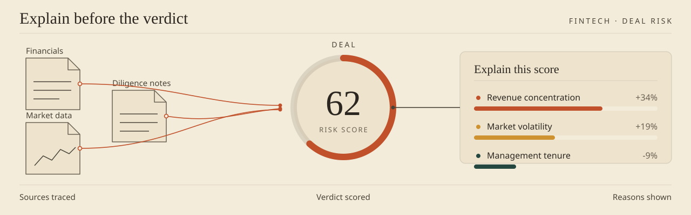

FinTech · AI-Assisted Private Equity Investing · 2025
- Role
- Lead Product Designer
- Team
- Cross-functional — engineers, data scientists, PM
- Surface
- LLM over deal docs for PE investing
- Screening
- 60% faster measured pre- vs post-rollout
- Status
- Shipped · under NDA
The short version
An LLM already scored deal risk accurately. What was missing was not precision but belief. The first release already carried a source behind every generated claim, and an “I’m not sure” state instead of a bluff. Screening ran 60% faster, because analysts stopped re-verifying the machine. I owned product definition and the abstention and citation UX; the model's accuracy is the ML team's result to defend.
A large language model already read the deal documents and scored the risk accurately. What was missing was belief, not precision. So the work was making every claim the model generated point back to the source it came from, before the first release — for readers whose whole profession is cross-examination.
One reframe · accuracy was solved, trust wasn't
Accuracy was never the bottleneck. Trust was.
Doubt is the job here, and these analysts are very good at it. A score they couldn't cross-examine wasn't a tool — it was a liability with a UI, and they treated it like one. It didn't help that the number came out of a large language model reading messy deal documents: the same technology that, pushed too far, will invent a confident answer it can't back up.
The LLM scored deal risk accurately — reading board packs, statements and interview notes the way a junior analyst would. That part was never in question. What was missing sat on the screen: every score read the same whether the model was ninety percent confident or fifty percent guessing, and nothing on screen told you whether a claim was pulled from a real document or quietly made up. With no way to check the reasoning, analysts built parallel scorecards and let the AI rank as a sanity check at best.
The scoring accuracy is the ML team's work and their measurement to defend; what I own is everything that made an accurate score acted on — the evidence beside the number, the abstention state, the override that got logged instead of lost. So the work was never to make the model more accurate. It was to make a correct score survive cross-examination by the most skeptical reader in the building — to tie every generated claim back to the document it came from — and to hold the launch until it could.
A score nobody trusts is a screen nobody opens.
An analyst won't stake a recommendation on a number they can't defend to the investment committee — so an unexplainable score, however accurate, becomes one more thing to audit by hand. The model added work instead of removing it.
The score could explain itself on the day it shipped.

The product served one analysis in two interpretation modes — because analysts read differently. Some want the full written argument to sit with and annotate; others want to interrogate. So the system generated a descriptive mode — a detailed written analysis of the deal, the scores explained in prose — and a conversational mode for questioning that same analysis. Neither was a free-form chatbot: underneath both runs an agentic architecture with strict operational boundaries — specialized components playing as an orchestra, not a single improvising soloist — so whichever mode an analyst chose, the answers stayed structured, auditable, evidence-based.

Above the single deal sat the scoring dashboard. The whole pipeline scored side-by-side — the multi-deal view where screening actually starts — and any deal drills down into the per-signal breakdown, the written analysis, and the conversation. One analysis, three surfaces, no forced workflow.
So I built an “explain this score” surface that grounds the model in its evidence. An analyst could pull any rating apart into the signals behind it, challenge the weighting, and watch the score answer back — and every signal came stapled to the exact document it was retrieved from, so no claim floated free of a source. Making the model survive that, before release rather than after, is the argument the whole project hung on — and the reason it took the weeks it did.
Three things were non-negotiable: a cited source behind each generated number, a visible "I'm not sure about this one" state where the model abstains instead of bluffing a confident answer it can't ground, and a logged override when the analyst disagreed. The abstention state mattered most — an LLM's worst failure is a fluent, wrong claim, and I'd rather it say nothing than hallucinate. The override drew the longest argument — logging disagreement felt exposing. What it actually built was institutional memory: every expert correction captured as structured data the system learns from, so the platform slowly comes to reflect how this firm thinks, not just what a generic model knows. A commodity model can be rented by any competitor; an accumulated record of the firm's own judgment can't.
The abstention threshold was a design argument, not just a statistical one. The design followed the model's own signals directly: every generated claim carried a per-claim confidence, and where it ran low, that claim rendered as the on-screen "I'm not sure about this one" — a signal that had lived only in evaluation dashboards turned into a state the analyst could see and act on. Pitching it is the whole difficulty. Pitch it too eager and the tool cries uncertainty on claims it could defend, and analysts learn to skim past the abstentions; too shy, and one fluent, wrong claim undoes the trust the tool has earned. The threshold has to fail toward humility — the cheaper mistake.
Trust also had to be cheap to enter. The deal flow's raw material lived in email — decks, spreadsheets, forwarded introductions — and analysts weren't going to re-key it into a system. So the platform meets them inside Outlook: tag an email, drag an attachment into the side panel, get an instant "Received, thanks" while agents stitch the unstructured pile into a deal profile in the background — and a prequalification score surfaces back in the inbox, where the prioritization decision actually happens. The same discipline went at the fuzziest judgment in the pipeline: management quality, traditionally pure gut feel, rendered as a scorecard that synthesizes leadership tenure, employee sentiment, and filed financial history into one timeline set against industry norms — a quantifiable proxy where there used to be a hunch, with every input traceable.
Pull a score apart and challenge it below — the signals, their cited sources, their weights, and the score answering back:
Top customer is 38% of recurring revenue — concentration pushes the score up.
Margins hold steady across three years; working capital reads clean.
Churn figure couldn't be matched against the raw export.
“I'm not sure about this one” — low confidence, kept visible
Disagreement logged — training signal


What building it first cost.
Building it first wasn't free. The accurate LLM sat finished while I built the surface that could defend it — the retrieval that tied each claim to a source, the abstention state, the override — weeks the team could feel, against a model that already worked. Waiting was the product owner's call as much as mine; what I own is the argument for it, because shipping a correct score nobody acted on would have been the more expensive mistake.
Accuracy gets you a correct number. It doesn't get you a decision. The gap between the two is the whole job — and it's made of trust, not math.
The receipt.
Interrogation turned into reliance · every number with its window
Screening ran 60% faster, and analysts went from ignoring the model to leading their deal memos with it. The LLM didn't get more accurate — they could finally trace every claim to its cited source and see where its confidence came from. What the NDA keeps off this page — the sample, the eval design, the baseline, who ran the count — I walk through on a call, artifacts open.
Where this wouldn’t transfer
Those weeks bought explainability, and that trade only pays when the user is an expert with a reputation riding on the answer. For a low-stakes, high-volume decision nobody audits, spending them would have been the wrong call.
What this one taught me.
To an expert, a score they can't interrogate is a smooth pitch with no references — and experts walk past smooth pitches.
Want the full version of this work?
Details are confidential; I'll walk through the artifacts — the service blueprint included — and numbers on a call under mutual NDA.
Send me the roleDesign Patterns Used in This Case
This project produced two patterns I now reach for whenever AI meets domain experts:
- ML Explainability Patterns: How to ground each generated claim in the cited source it was retrieved from — and surface abstention when the model isn't sure — so a non-technical expert can read the why, not just the verdict.
- Human-in-Loop Patterns: The override-and-explain loop, the visible weighting on each risk factor, and disagreement handled with respect — the moves that keep the expert in command.
I write about this in my newsletter ↗
That was trust built for experts betting other people's money. Next: take the model away entirely — the same trust problem, between two hundred people.